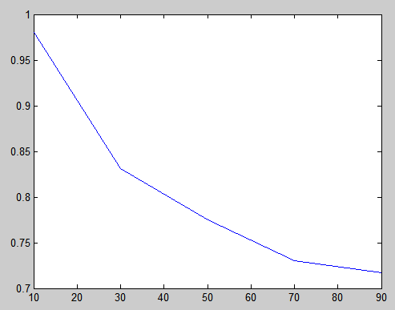
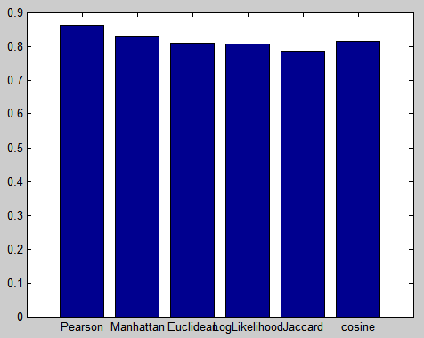
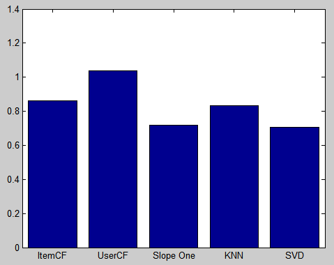

一、常用推荐系统算法总结
1. ItemCF (基于商品的协同过滤)
这个算法是cf中的一种，也是当今很多大型网站都在采用的核心算法之一。对于商城网站（以Amazon为代表，当然也包括京东那种具有搞笑特色的推荐系统在内），影视类推荐，图书类推荐，音乐类推荐系统来说，item的增长速度远不如user的增长速度，而且item之间的相似性远不如user之间的相似性那么敏感，所以可以在离线系统中将item的相似度矩阵计算好，以供线上可以近乎即时地进行推荐。因为这种方法靠的是item之间的相关性进行推荐，所以推荐的item一般都和喜欢的item内容或者特性高度相似，很难推荐出用户潜在喜欢的item，多样性也比较差。
2. UserCF(基于用户的协同过滤)
这个是cf中的另外一种，它的主要特色是可以发现和用户具有同样taste的人，有句俗话叫做观其友知其人，大概也是这个道理吧。找到用户的相似用户，通过相似用户喜欢的item推荐给该用户。因为用户的相似用户群还是比较敏感的，所以要频繁地计算出用户的相似用户矩阵，这样的话运算量会非常大。而且这个算法往往推荐出来的item很多都是大家都喜欢的比较hot的item，有的时候它提供的结果并不是个性化，反而成了大众化的推荐了。用这种算法的web应用一般都是item更新频繁，比如提供资讯类服务的应用（以“指阅”为代表的），或者笑话类推荐（以“冷笑话精选”为代表的）。当然这种算法的一个中间产物—–用户相似度矩阵是一个很有用的东西，社交类的网站可以利用这个中间产物来为用户提供相同品位的好友推荐。
3. Content Based(基于内容的推荐)
基于内容的推荐，很大程度上是在进行文本挖掘。web应用提供的内容或者爬取的内容在推给用户之前可以做一些挖掘，比如资讯类的应用，将抓取到的资讯，通过文本分析那一套算法提取出每篇资讯的关键词，以及统计频次和逆向文档频率来聚类或者笨一点地话计算出资讯的相似度矩阵，即共同的key words越多，两篇资讯的相似度越高。当你的用户很少很少，你的显式反馈数据非常非常少的时候，你可以根据用户的浏览或者搜索等等各种行为，来给用户进行推荐。再猥琐一点的话，你可以在用户刚刚注册好你的应用的时候，给他一些提问，比如让他输入一些感兴趣的话题啊，或者对以前看过的电影打分什么的。（当然这些电影都是你从各个簇中随机选取的，要足够多样性）这个算法它好就好在，不需要拿到用户–项目的评分矩阵，只需要知道用户喜欢什么，就可以很快速地推荐给用户十分相关的item。这个算法需要每天都要根据你抓取的资讯，不断地计算item之间的相似性。这个算法有个好处在于可以从容应对上面的两个算法其实都很难应对的问题，就是如果你想推出一个新的item，因为没有一个人有对这个new item的评分，所以上述的两个算法不可能推荐新的东西给你，但你可以用基于内容的算法将新的item计算出它属于哪个类，然后时不时地推出你的新item，这点对于商城尤其重要。
4. kNN(邻近算法)
k最近邻(k-NearestNeighbor，kNN)分类算法，是一个理论上比较成熟的方法，也是最简单的机器学习算法之一。该方法的思路是：如果一个样本在特征空间中的k个最相似(即特征空间中最邻近)的样本中的大多数属于某一个类别，则该样本也属于这个类别。kNN算法中，所选择的邻居都是已经正确分类的对象。该方法在定类决策上只依据最邻近的一个或者几个样本的类别来决定待分样本所属的类别。 kNN方法虽然从原理上也依赖于极限定理，但在类别决策时，只与极少量的相邻样本有关。由于kNN方法主要靠周围有限的邻近的样本，而不是靠判别类域的方法来确定所属类别的，因此对于类域的交叉或重叠较多的待分样本集来说，kNN方法较其他方法更为适合。
5. Slope One
推荐系统的最最本质的事情就是把user-itemrating矩阵中的空白填好，看穿这个本质以后，你可能会觉得问题一下子简单多了，填格子啊？填格子谁不会啊。因此很多高效加搞笑的算法就出来了。slope one就是其中，说实话，这个算法我自己没有写过，但是看到这个算法怎么实现的，我就觉得应该很好做，而且算起来会很快，但结果肯定不会特别理想。
Slope One的基本概念很简单, 例子1, 用户X, Y和A都对Item1打了分. 同时用户X,Y还对Item2打了分, 用户A对Item2可能会打多少分呢?
| User | Rating to Item 1 | Rating to Item 2 |
|---|---|---|
| X | 5 | 3 |
| Y | 4 | 3 |
| A | 4 | ? |
根据SlopeOne算法, 应该是:4 -((5-3) + (4-3))/2 = 2.5.
当然这个只是个算例简单地说明下原理，当user和item都很多的时候，你可以用加权的办法来做。为什么我会感觉这个算法的效果会不理想呢？因为，这个算法总是把你的口味和大众的平均口味作对等，推荐出来的东西很难是非常个性化的。很容易让很多用户的推荐结果趋向一致，也就是大数的平均值，也即大众的平均口味。
6. SVD(奇异值分解)
svd的全称是：SingularValue Decomposition，翻译过来是奇异值分解，是一种矩阵分解的方法。其实，这个方法是提取一般实矩阵“特征值”的算法，（这里特征值加引号是因为，特征值是针对方阵来定义的，而一般的m*n的实矩阵是没有特征值的。）其实，矩阵就是一个线性变换的表示方法，因为一个向量乘一个矩阵的结果是一个向量，第一个向量通过线性变换来变成第二个向量。线性变换有许多变换方向，比如你可以对一个图像矩阵做伸缩同时也做平移。那么特征值和特征向量又是什么？一个特征向量就是表示其中的一个变换方向，而对应的特征值则表示这个变换方向对于整个线性变换有多么重要。书归正传，那么奇异值又是什么？我觉得奇异值就是特征值从方阵往一般实矩阵的一个推广。你将一个m*n的实矩阵和它的转置相乘，就会得到一个方阵，然后对这个方阵做特征值分解，得到的特征值就是所谓的奇异值的平方。我的意思是说，某种意义上，可以讲奇异值和特征值理解为一回事。那么拿到奇异值又会有什么用呢？拿到奇异值后，我们就可以抓到主要的成分，丢掉次要和非常次要的成分进行分析。也就是说，我们可以对原来的庞大的常常又非常稀疏的矩阵进行降维和分解，而分解后得到的矩阵都是稠密矩阵。最终我们会得到一个表示user特性的矩阵和一个表示item特性的矩阵。拿到这些数据之后，我们就可以进行推荐了，而且也可以很容易地进行聚类分析。这个算法的好处在于，可以解决rating矩阵的稀疏性问题，同时可以降低矩阵的维度，提高运算速度。但它的缺点是付出的空间代价太大。在做SVD分解时，你需要先把一个大的rating矩阵分解成三个大的矩阵，这三个矩阵需要存在计算机内存中，然后才能进行降维。其实，SVD这个方法的思路和PCA（主成分分析法）很像，抓住主要矛盾，忽略次要矛盾。分解降维后的矩阵非常约等于原来的矩阵。
7. 聚类算法
这里用到的聚类算法，是用来降低维度以及为并行计算作准备的。拿到rating矩阵之后，可以通过这些评分将用户自然地聚成几簇，然后用上述的算法对各个簇做推荐算法并行计算，充分地利用好所有计算资源。当然你也可以在SVD分解之后，拿到user和item矩阵之后，对这两个矩阵分别作聚类分析，你可以得到user的簇以及item的簇。这样的结果会非常有意义，你可以作好友推荐，相似item推荐等等。在基于内容的算法中，因为很多资讯之间并不是那么的相关，把他们都相互计算相似度，会得到很多的0，所以没有必要。因此可以在计算之前，对整个item做个聚类，然后分别对各簇来做相似度计算。聚类算法中，我用过性能最好的也是最简单的就是k-Means。
8. 组合算法
任何一个算法都有它独特的优势和固有的缺陷，因此单用一个算法的web应用很少，往往是将各种算法组合起来用。
一种方式是：将多种算法计算出来的结果，加权之后排序推荐给用户。
一种方式是：将多种算法计算出来的结果，各取前几个推荐给用户，这样做的好处是结果很丰富多彩。
一种方式是：用svd算法填充后的矩阵作为输入，用普通cf做计算来输出，然后排序推荐。这种叫做层次推荐，可以得到两种方法的好处。
一种方式是：对新用户做基于内容的推荐，因为新用户没有任何评分数据，对老用户用cf来做。
… …
二、性能评价
1. 训练集大小对于推荐性能的影响
使用SlopeOne算法，每次随机选取6%的用户预测其喜好，进行5次实验，取MAE的均值，得到下表：
| 训练集大小（%） | MAE |
|---|---|
| 90 | 0.71718149 |
| 70 | 0.73005925 |
| 50 | 0.77483222 |
| 30 | 0.83092947 |
| 10 | 0.98020104 |
绘制成折线图，如下图所示：

由此可知，训练集越大，则推荐的准确率越高。
2. 不同相似度度量对性能的影响
使用ItemCF算法，训练集大小为数据集的90%，每次随机选取30%的用户预测其喜好，进行5次实验，取MAE的均值，得到下表：
| 相似度度量方法 | MAE |
|---|---|
| 皮尔逊相关系数 | 0.86158483 |
| 曼哈顿距离 | 0.82744657 |
| 欧几里德距离 | 0.80844643 |
| 对数似然值相似度 | 0.80750607 |
| Jaccard相似度 | 0.78540776 |
| 余弦相似度 | 0.81422523 |
绘制成直方图，如下图：

由此可知，Jaccard相似度的性能略好于其他几种相似度，但是优势很小。使用不同相似度度量方法差别不大。
3. 不同推荐算法的性能
使用皮尔逊相关系数作为相似度，训练集大小为数据集的90%，每次随机选取6%的用户预测其喜好，进行5次实验，取MAE的均值。其中kNN算法取近邻大小为5；EM算法的学习速度为0.005，过度拟合值为0.02，随机噪声值为0.005，EM的迭代次数为20。得到下表：
| 推荐算法 | MAE |
|---|---|
| ItemCF | 0.86158483 |
| UserCF | 1.03740876 |
| Slope One | 0.71718149 |
| kNN(k = 5) | 0.83184328 |
| SVD (Compute SVD using EM Algorithm: learning rate = 0.005, overfitting prevention = 0.02, random noise = 0.005, epoch = 20) | 0.70493273 |
绘制成直方图，如下图：

由此可知，SVD和Slope One算法的推荐结果最为精确，UserCF最差。这个数据和推荐系统相关著作中的结论是吻合的。
此外，在内存方面，Slope One最占内存，1G内存下最多只能处理6%左右的用户。而其他算法均能轻松地处理30%以上的用户量。
在速度方面，SVD速度最快，处理每个用户的平均时间约为4ms，SlopeOne的平均时间约为30ms，ItemCF和UserCF的平均处理时间都在10ms左右。kNN的速度是最慢的，平均处理时间约为100ms。